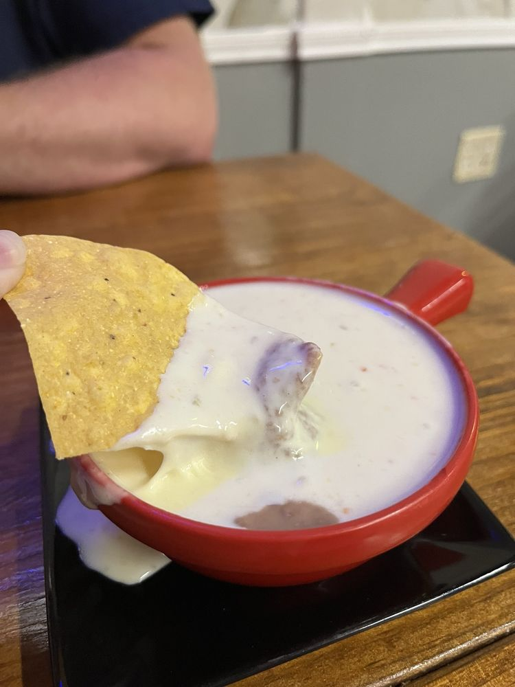
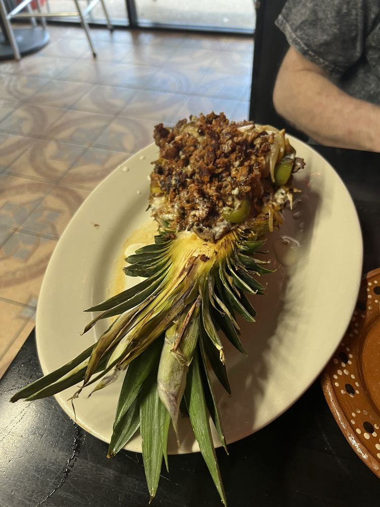
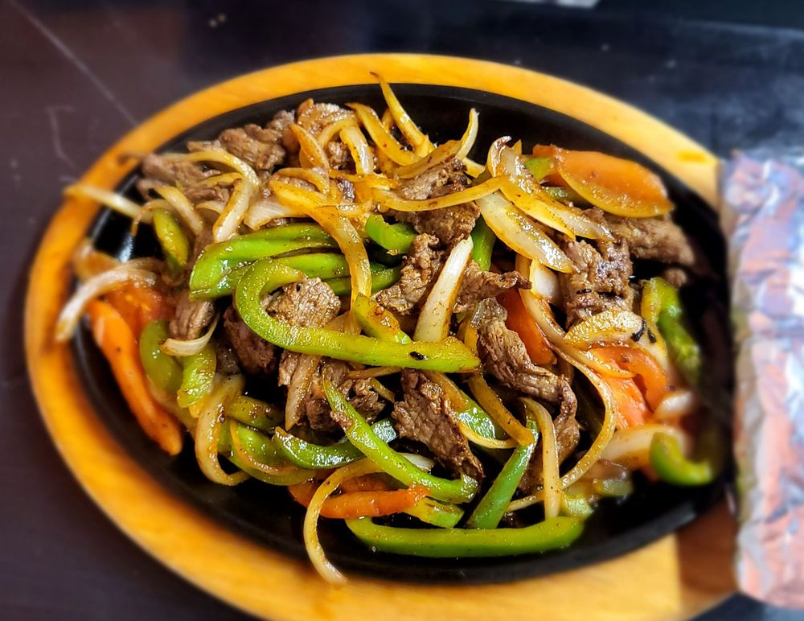

Family-owned in Watauga. Our signature queso blanco is made fresh daily, our carne asada is a favorite, and the margaritas complete the meal. Come hungry — leave family.

queso blanco, fresh daily
Piña Loca
sizzling fajitasThree tacos served with rice and beans.
Two enchiladas with rice and beans — drink included.
Discounted drinks. Try our margaritas and ask about beer on draft.
A warm bowl of menudo, served with the fixings and tortillas.
Texas transplant from Mississippi looking for the Mexican food I grew up on, and this is it! The staff is friendly, and the queso blanco is runny and absolutely delicious.Google review · Feb 2026
The food was hot, fresh & delicious!! The Queso is a must have! … Great talking with the owner, super sweet lady!Google review · Jan 2026
This food was so freakin delicious. We shared between 3 adults and we were STUFFED!Google review · Jan 2026
Watauga, TX 76148 · Dine-in · Takeout · Delivery
| Monday | Closed |
| Tue – Thu | 11 AM – 8 PM |
| Fri – Sat | 11 AM – 9 PM |
| Sunday | 11 AM – 7 PM |